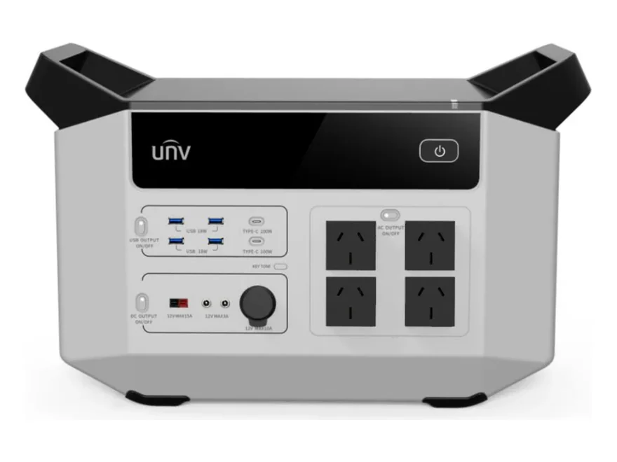

Kamp ve karavan
Buzdolabı, aydınlatma ve cihaz şarjı; jeneratör gürültüsü ve yakıt derdi olmadan.

2496 Wh batarya ve 2500 W sürekli çıkış: buzdolabınızı, bilgisayarınızı ve aydınlatmanızı şebeke olmadan çalıştırır. Dört adet 230 V saf sinüs prizi, USB ve Type-C çıkışlarıyla aynı anda 14 cihaza güç verir; elektrik kesildiğinde 30 ms'de devreye girerek kesintisiz güç kaynağı gibi davranır.
₺118.500 ≈ $2.495
KDV dahil fiyattır.
💰 Havale/EFT ile: ₺114.950
Trek Pro 2500, prize ihtiyaç duyduğunuz her yere elektriği birlikte götürmeniz için tasarlanmış taşınabilir bir güç istasyonudur. İçindeki 2496 Wh'lik batarya, 2500 W'a kadar çeken cihazları şebekeden bağımsız çalıştırır.
Çıkışlar saf sinüs dalgadır: buzdolabı, kombi, bilgisayar ve ölçüm cihazı gibi dalga biçimine duyarlı ekipmanlar bozulma yaşamadan çalışır. Üstteki dört 230 V prizin yanında iki Type-C (200 W ve 100 W), dört USB-A ve 12 V doğru akım çıkışları bulunur — toplamda 14 cihaz aynı anda beslenebilir.
Şebekeye bağlıyken elektrik kesilirse cihaz 30 milisaniye içinde kendi bataryasına geçer. Bu sayede bilgisayarınız, modeminiz veya kamera kayıt cihazınız kapanmaz; ayrı bir kesintisiz güç kaynağına ihtiyaç kalmaz.
Kamp ve karavanda, elektrik çekilmemiş bir şantiye veya bahçede, düğün-organizasyon gibi geçici kurulumlarda ve evde yedek güç olarak kullanılır. Güneş paneli ürüne dahil değildir.
| Adet | Çıkış |
|---|---|
| 4 × | 230 V AC priz — saf sinüs dalga |
| 1 × | USB Type-C — 200 W |
| 1 × | USB Type-C — 100 W |
| 4 × | USB-A — 18 W |
| 1 × | 12 V DC çıkış — maks. 15 A |
| 2 × | 12 V DC çıkış — maks. 3 A |
| 1 × | Araç çakmak soketi 12 V — maks. 10 A |
AC, DC ve USB grupları ayrı ayrı açılıp kapatılabilir; kullanılmayan grubu kapatmak bekleme tüketimini azaltır. Toplam 14 çıkış aynı anda kullanılabilir — bağlı cihazların toplam gücü 2500 W'ı aşmamalıdır.
| Sürekli çıkış gücü | 2500 W |
| Batarya kapasitesi | 2496 Wh |
| AC çıkış | 4 × 230 V — saf sinüs dalga |
| USB Type-C | 1 × 200 W + 1 × 100 W |
| USB-A | 4 × 18 W |
| DC çıkış | 12 V maks. 15 A · 2 × 12 V maks. 3 A · araç soketi 12 V maks. 10 A |
| UPS tepki süresi | 30 ms |
| Eşzamanlı cihaz | 14 adet |
| Marka / model | UNV (Uniview) · ES-E2500-A2 |
Buradaki değerler üreticinin ürün künyesinden alınmıştır. Batarya kimyası, şarj süresi, ağırlık ve ölçü bilgileri künyede yer almadığı için yazılmamıştır — bu değerlere ihtiyacınız varsa sipariş öncesi WhatsApp'tan sorun, üreticiden teyit ederek bildirelim.
Tek cihazla dört ayrı ihtiyaç — taşıyın, takın, çalıştırın.
Buzdolabı, aydınlatma ve cihaz şarjı; jeneratör gürültüsü ve yakıt derdi olmadan.
Elektrik çekilmemiş alanda el aletleri ve ölçüm cihazları için 230 V saf sinüs.
Kesintide 30 ms'de devreye girer; modem, bilgisayar ve kamera kaydı kapanmaz.
Stant, organizasyon ve açık hava çekimlerinde taşınabilir priz noktası.
2500 W'a kadar çeken cihazları besler: buzdolabı, televizyon, dizüstü bilgisayar, modem, aydınlatma ve çoğu küçük elektrikli alet. 2496 Wh kapasite, 100 W çeken bir cihazı verim kayıpları dâhil yaklaşık 20 saat çalıştırır; süre cihazın gücüne göre değişir.
Toplam 14 çıkış vardır: 4 × 230 V AC priz, 4 × USB-A, 2 × USB Type-C ve 12 V DC çıkışları. Bağlı cihazların toplam gücü 2500 W'ı aşmadığı sürece hepsi aynı anda kullanılabilir.
Cihaz şebekeye bağlıyken elektrik kesilirse 30 milisaniye içinde kendi bataryasına geçer. Bilgisayar, modem ve kamera kayıt cihazı gibi ekipmanlar kapanmaz.
Güneş paneli ürüne dahil değildir. Kullanımınıza uygun panel ve bağlantı seçenekleri için sipariş öncesi bize danışın.
Bu ürün farklı priz standartlarıyla üretilmektedir. Size gönderilecek cihazın priz tipini sipariş öncesi WhatsApp'tan teyit ediyoruz; uygun olmayan bir sürüm göndermiyoruz.
Stok ve teslimat için WhatsApp'tan yazın; aynı gün dönüş yapıyoruz.